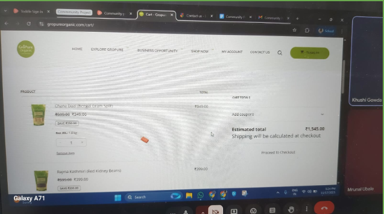
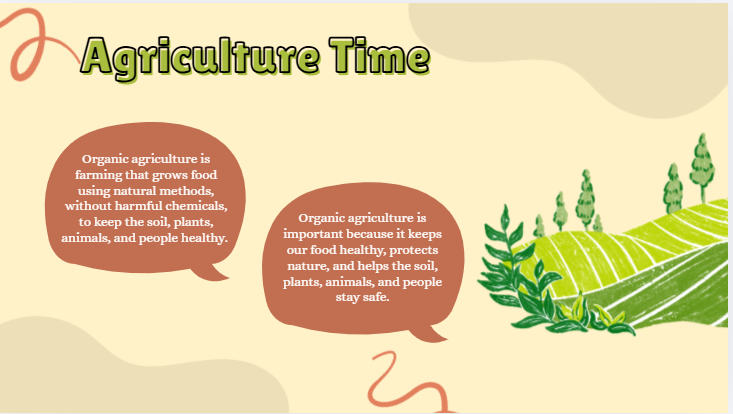
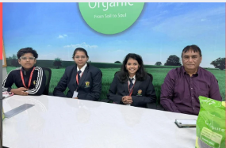
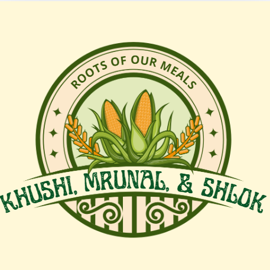
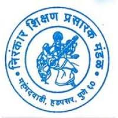
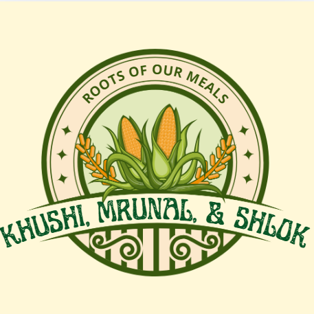
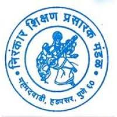

About the Project

We have visited GroPure Organics Office to explore and understand sustainable agriculture practices. During the interview,we interacted with the farmers to learn how they conserve water, maintain soil health, manage waste, and grow crops without harming the environment. We Took photos and short video clips to document the process. After the visit, we have created a short educational video or exhibition that highlights what we learned, showing sustainable techniques like composting, crop rotation, the use of organic fertilisers, and renewable energy sources. The exhibition or video will aim to raise awareness among the school community about how sustainable farming supports food security, biodiversity, and climate action.
Global Context & Goals
- Globalisation & Sustainability
- Promote sustainable food systems
- Educate younger children
- Support farmers & community
Planning & Brainstorming
During the initial planning stage of our Community Project, our group conducted several brainstorming sessions to explore different ways we could create a meaningful impact in our community. We discussed ideas related to food, sustainability, education, and social responsibility, while also considering our personal interests and strengths. Through these discussions, we realised that sustainable agriculture was a topic that connected all our ideas and addressed a real-world issue affecting both the environment and society.
After further research, we finalised our project idea, Roots of Our Meals, which focuses on understanding how food is grown sustainably and spreading awareness about eco-friendly farming practices. We planned to collaborate with GroPure Organics to gain real-life insights into organic farming and sustainable agricultural methods. As part of our planning, we outlined key actions such as conducting interviews, collecting visual documentation, creating an educational presentation or video, and organising community teaching sessions.
We also carefully planned our target audience, initially aiming to teach children from schools and later adapting our plan to include orphanages when school collaborations were not possible. Throughout the planning process, we created timelines, discussed safety and permissions, and followed the school’s approval procedures to ensure our project was ethical, organised, and achievable. This brainstorming phase helped us build a strong foundation for our project and prepared us to adapt when challenges arose.
Action Taken
- Collaborated with GroPure Organics 
- Conducted interviews
- Created awareness content
- Prepared sustainable grocery hampers
- Taught children about agriculture
Challenges & Setbacks
Throughout our Community Project journey, we encountered several unexpected challenges that required flexibility, resilience, and strong teamwork. One of the biggest obstacles was coordinating with external organisations and schools. Our original plan involved teaching students at Lexicon Day Care; however, when we contacted them for confirmation, we were informed that the children were preparing for their Annual Day and were unable to host outside visitors. This meant we had to quickly rethink our outreach strategy and begin searching for new community partners.
We then contacted more than 20 different schools in hopes of conducting our educational sessions. Many schools either declined our request or did not respond at all, which was discouraging and slowed down our progress significantly. At one point, Smart Champs School showed interest, and we felt hopeful about moving forward. Unfortunately, after the confirmation process, they informed us that the collaboration would not be possible. This was a major setback because we had already begun planning activities specifically for their students.
Another major challenge involved our collaboration with GroPure Organics. Initially, we hoped to visit their farms, observe sustainable practices firsthand, and conduct live interviews with farmers. However, we later learned that their farms were located far away and were also undergoing development, which meant in-person visits were not allowed. As a result, we had to change our original plan and rely on online interviews and shared videos instead. While this limited our hands-on experience, it pushed us to be more creative in how we gathered and presented information.
We also faced challenges related to time management and official approvals within the school system. Navigating the approval process required multiple meetings with coordinators and school leaders, which sometimes delayed our progress. Additionally, scheduling issues with organisations, including late confirmation dates from Ghar Ashram, created pressure as we worked to meet our project deadlines.

Despite these difficulties, each challenge taught us important real-world skills such as communication, adaptability, problem-solving, and perseverance. Instead of giving up when plans changed, we continued to explore alternatives, adjust our strategies, and stay committed to our goal of creating a meaningful and impactful community project. These experiences ultimately strengthened our teamwork and helped us grow as independent learners.
Learning & Outcomes
- Learned about organic fertilisers like Jivamrut
- Understood sustainable farming practices
- Developed communication & leadership skills
Timeline
Gallery
 




Reflection
This project helped us understand sustainability, teamwork, and real-world problem solving. We learned to adapt plans and collaborate with organisations effectively.
Impact & Reflection
Community Impact
Through our project, we spread awareness about sustainable agriculture and healthy food systems. Our educational presentation and eco-friendly hampers helped children understand where food comes from and why sustainability matters.
Personal Growth
We improved communication, teamwork, planning, and confidence while working with organisations and overcoming real-life challenges.
Collaboration Skills
Working with new people taught us to share responsibilities, listen to different ideas, and respect each team member’s strengths.
Skills Developed
- Communication
- Research
- Creativity
- Leadership
- Problem Solving
Improvements
Next time we would contact organisations earlier and prepare backup plans sooner.
Knowledge Hub
Farmer Quote
“It is better to have a family farmer than a family doctor.”
Did You Know?
- Organic farming reduces chemical pollution
- Crop rotation improves soil health
- Composting turns waste into nutrients
- Water conservation protects crops
Sustainability Tips
- Buy local produce
- Reduce food waste
- Grow plants at home
- Use reusable bags
Project Timeline
- Brainstorming
- Approvals & Planning
- Organisation Contact
- Research & Interviews
- Content Creation
- Community Teaching
- Final Reflection
Project Map
(Insert a screenshot or Google Map image here)

Contact & Credits
School
Victorious Kidss Educares – IB MYP Community Project
Guidance
- Reema Ma’am – CP Coordinator
- Pooja Ma’am – MYP Coordinator
- Reneesh Sir – Secondary Principal
Organisations
- GroPure Organics
- Ghar Ashram
Sources
- GroPure Organics Website
- Sustainable Agriculture Research
- Interview Responses